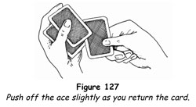
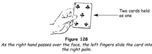
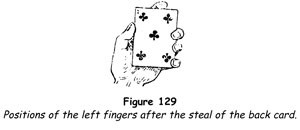
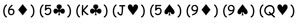
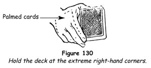
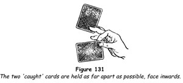
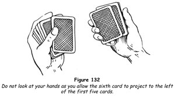
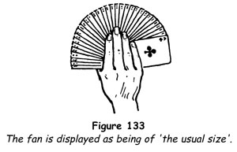
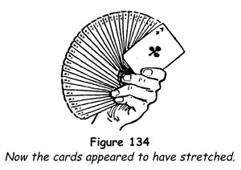
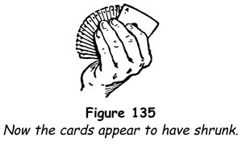

Conus Ace Trick
The number of four-ace tricks is now legion, but one of the first and still the best is the one devised by the French conjuror Conus over a century ago. With slight modification the trick is as effective today as it ever was. The plot, as in all great tricks, is simple. The four aces are transformed in a spectator's hands into four other cards and they are finally found in one of his pockets.
You will need a deck of cards and four duplicate aces. On the top of the deck place the four duplicate aces, with the ace of clubs uppermost. On top of all place the ace of clubs from the deck, so that at the top you have two aces of clubs followed by the three duplicate aces. The other three aces of the deck are scattered through it. Remove any four indifferent cards from the pack, then put it in its case and put the case on your table.
1. Invite a spectator to come forwards to assist you. Seat the volunteer at a small table at your left. Pick up the card case and, saying that you will use a deck of cards, remove the cards and lay the case on the table. Spread the cards with their faces outwards, showing them but keeping the aces at the top bunched together. Close the spread and insert your left little finger under the five top cards. Square the deck and hold the break under the five top cards by pressing the little finger firmly against the side of the deck. You can then hold the deck quite openly, yet you are ready to palm the five cards whenever you please.
2. Address the spectator. 'You are to act as a committee of one on behalf of this large and intellectual audience, so I want you to be absolutely satisfied about everything that takes place. You agree to that?'
'Yes.'
'First, we haven't made any arrangement about this trick, have we?'
'No.'
'As a matter of fact, you have never seen me before in your life, have you?'
'No.' (Sometimes when the assistant is an acquaintance and people know it, you get some fun out of his accommodating answer.)
'Fine, you will be satisfied about everything that takes place?'
'Yes.'
'You won't say yes if you mean no?'
'No.'
'You mean no?'
'Yes.'
'Good! Now that we thoroughly understand each other, will you take the deck, remove the aces and see that there are only four all together?' In the meantime, you have quietly palmed the five top cards and taken the pack in your right hand.
3. Place the deck on the table before him and, as he begins to run through it, turn to the audience. 'You cannot be too careful. Some people, especially when playing poker, use a lot of aces.' Turn to your assistant, who has found and removed three aces and is searching for the ace of clubs. 'One, two, three aces,' you say. 'What have you done with the fourth?' Seize his right lapel with your right hand, pulling his jacket open. Hold it for a moment as you say to the audience, 'Did you see what he did?' Then take the lapel with your left hand and thrust your right hand into his inner breast pocket. Bring out the first ace of clubs and leave the other four aces in the pocket. Show it, and under cover of the laughter this causes, whisper to him, 'Button up your jacket just to make them laugh.' He does this, and the action always causes amusement. It also safeguards you against any premature discovery of the duplicate aces, safely ensconced in the buttoned jacket.
4. 'You mustn't do that. I'm the one to do the trick, you are the committee.' Take the deck, open it bookwise and have the spectator insert the four aces. Close the pack on them, and in putting it on the table make a pretence of manipulating the cards. 'Now, the aces are in the middle of the deck?' Having seen you make a suspicious move, he will express doubt about that. 'You are quite right,' you say. 'I want you to be perfectly satisfied. Watch.' Take the deck, turn it face upwards, run through it to the four aces and show them in the middle. 'Right?' Close the spread, inserting your left little fingertip above two of the aces. Make the pass in turning the deck face downwards and lay the cards on the table.
5. 'Now, those four aces placed in the middle by yourself will travel to any position you may like to name. For instance, would you like them all at the top or all at the bottom, or one on the top and three on the bottom, or one on the bottom and three on the top, or, say, two at the top and two at the bottom?' Rattle off the first choices very rapidly, the last after a momentary pause, then say, 'Wait. For greater safety, place your hand on the deck.'
Nearly always the spectator chooses the last suggestion. 'Two above and two below,' he says. Tap the deck with your right forefinger, say, 'Pass!' and then have him remove the cards himself. A round of applause is sure to follow.
If another position is chosen, you have at least one ace already there. Take the pack and let the spectator remove that one. Then, as he shows it, make the pass to bring the others to the position required.
6. Show the four aces and place them on the top of the deck. 'You did that very well. With a few years' practice I'm sure you will make a good magician. Now, suppose I place the aces on the table, so [deal them face downwards], and you place your hand on them.' Grasp his hand and place it on the four cards. 'Do you think I could take them away from you and send you four other cards? You'd like to see me try? By the way, are you quite sure that you have the four aces?'
The spectator, not having seen the aces since they were placed on the deck, expresses his doubts. 'That's right. I'm glad you are a little sceptical, for I want you to be quite certain. See [take the four cards and show them], they are the four aces.' Replace them on the top of the pack.
7. Look at your hands, make a rapid movement as if making the pass, then deal the four top cards on the table, and again place his hand on them. 'This time you have them?' The spectator responds that he is not at all sure about that. 'There is such a thing as being too sceptical,' you say. 'Turn the cards over yourself.' As he does so slip the tip of your left little finger under the top card. He turns the cards over and shows the aces.
8. Take them again. Casually place them on the deck, then remove them, taking the top card with them. 'There has been no change so far,' you say, holding the packet of five cards up so that he and the audience can see the face of the indifferent card. Drop the packet on the deck and then deal off the four aces. Grasp his hand and place it on them. 'This time you have the aces.' The spectator vigorously protests that he has not. Appeal to the onlookers, 'You are all satisfied that the aces are on the table?' There will be cries of 'No! No!'
Pretend to be at a loss as to how there can be any doubt about the matter and turn to the spectator. 'I can't do the trick until you are perfectly satisfied. Please turn the aces over and show them to everybody.' In the meantime you have had ample opportunity to palm five cards from the top of the deck in your right hand. Retain the deck in that hand.
=
The aces are shown amidst laughter and much to the surprise of all. Maintain your attitude of being a little bewildered by the attitude of the audience. Take the aces one by one in your left hand, and hold them face downwards. Lay the pack down and suggest that the spectator look it over. Take the aces with your right hand, adding the five palmed cards to them. Hold the packet face outwards by the ends between the right thumb and fingers and say, 'Now, to make quite sure there can be no mistake, I'll give the aces a good bend, so.' Squeeze the ends, making the face of the packet concave. 'There can be no doubt about the aces now.'
9. Take the deck in your left hand, and drop the packet from your right hand on top. 'Can you tell me where the aces are now?' you ask. Seeing the bent cards, the spectator answers confidently, 'On the top.' 'Satisfied at last. Watch very closely.' Deal the four top cards very delicately one by one and place them in a pile before him. As you remove the fourth card press the left thumb on the pack, taking the bend out of the other cards. Turn the top indifferent card face upwards, saying, 'You see, they're all gone.' In replacing it slide it under the top ace, which you push off the pack a little to facilitate this (figure 127). 'Place your hand on the aces and your other hand on top of that. Don't move your hands or the audience will think you are doing the trick instead of me.

10. 'Here's the impossible thing I shall try to do. I shall change those four aces you are holding so tightly and send you four other cards. Here is one card.' Make the double lift and turn-over, showing the indifferent card seen just before. Turn them down as one card and thumb off the top card - an ace - face downwards on the table.
Begin an overhand shuffle by pulling out all except the top and bottom cards, thus keeping the changed card out of sight, drop the pack on the two cards, undercut half the deck, injog the first card, and shuffle off. Undercut to the injog, bringing the three aces back to the top. Take off two cards as one and, holding them towards the spectator, ask him to breathe on the card. As he does so, slide the two cards rapidly apart, saying, 'I didn't ask you to blow. You've made two!' Drop them on the first ace without showing their faces.
11. Spread the cards and ask the spectator to remove one. 'Show it to everyone,' and, as he does so, palm the top card in your right hand and take the deck in that hand. 'What card did you take? The ten of diamonds,' you say, taking it face downwards in your left hand. Lay the pack down and take the card in your right hand, adding the palmed ace to it. Hold the card(s) up by the ends showing it (them), and place it (them) in your left hand, face outwards, the thumb on the face and the fingers on the back (figure 128).

'I shall change this card into one of your aces. Would you like me to do it visibly or invisibly? Visibly? Very well, I pass my hand over the cards, so [pass your empty right hand across the card], and nothing happens. I pass it over again [this time push the rear card with the left fingers into the right hand and palm it] and again nothing happens.' Change the grip of the card in your left hand so that it is held between the thumb on one side and the middle finger on the other, with the forefinger resting on the middle of the top end (figure 129). 'This is the critical time. Watch!' Pass the right hand over the card and deposit the palmed card on it without pausing a moment. The tips of the fingers and thumb make a frame into which it fits snugly.

'One ace!' you exclaim. Pick up the other three one by one, placing them in the left hand fanwise and saying, 'Two! Three! All four! Will you look at your four cards and see what I have sent you? Show them to everybody.'
The spectator turns his four cards and shows four indifferent cards. Take this opportunity to slip the indifferent card from the back of the four aces in your right hand on the deck, which you have picked up with your left hand. Pause while you display the four aces, and acknowledge the applause as if the trick was ended.
12. Casually place the aces on the top of the pack and immediately palm them in your right hand, taking the pack in that hand. Then say to the spectator, 'You did that very nicely. I'd like you to try another trick before I put the deck away.' Pick up the card case with your left hand, put the pack down with your right hand, and take the case in that hand. 'Place your hand on the deck. Right. Now I shall make the aces pass up your sleeve into one of your pockets. Pass! Did you feel them go? No? Well, run through the deck. No aces? Then kindly search your pockets.' As he does this, take the pack, adding the palmed aces to it, and place it in the case.
The spectator finally unbuttons his jacket and much to his surprise finds the four aces in his breast pocket. The duplicate aces were placed in his pocket so long before that no one remembers that you even so much as touched them.
Not only is this trick a most effective one, but it also affords ample opportunities for inoffensive fun which the assisting spectator will enjoy as much as the audience.
Ladies' Looking Glass
This fanciful title was given to the feat by its inventor, Comte, a famous French magician who flourished in the early years of the 19th Century. The trick is one of the great card tricks, and we have retained the title but somewhat modified the procedure.
Four spectators each remove a pair of cards from the deck, which are then replaced and the deck shuffled. Three of the pairs appear in rapid succession at the top and bottom of the deck, and the magician tosses the cards into the air and catches the last pair at the tips of his fingers.
You will need a deck of cards and eight duplicate cards. Since these cards must be memorised, it is well to take eight cards of some known arrangement, for example, the first eight cards of what is known as the Nikola system. These are:

Place these eight cards on the top of the deck in that order. Take any indifferent card from the deck, place it on top of the duplicate set of eight cards - which are in the same order - and place the packet of nine cards in your right trouser-pocket, with the backs outermost.
Present the trick as follows.
1. 'Many years ago,' you begin, 'when I was a boy, I saw a famous magician do a feat with cards, which was so extraordinary that I have puzzled over it ever since and have never been able to find a solution to it. I shall show you what he did, and perhaps some of you may be able to suggest an answer to the problem.'
2. 'First, he had a number of cards taken.' Take the deck, shuffle overhand, using the lift shuffle and retaining the arranged cards at the top. 'Since it makes no difference what cards are taken, will you, sir, [addressing someone on your right] just call “Stop” whenever you please as I shuffle the cards.' Begin the lift shuffle, and at the word 'Stop' drop the controlled packet on to the cards in your left hand. Hold this hand out to the spectator and have him take the card stopped at. 'Do you think you can remember two cards? Very well, take the next as well.' Address another person on his right and have him take the next two cards.
3. Place the cards in your right hand underneath those in your left, begin another lift shuffle and ask a third person to the right of the second to call 'Stop' in the same way. Have him take the two top cards of the left-hand packet and have a fourth person take the next pair. This is the easiest, quickest and most convincing way of forcing a number of cards. 'Please remember your cards. Show them to those near you so that there can be no mistake.'
4. 'This done, the old master handed the deck to the first person, asking him to replace his cards, shuffle the deck, and hand it on to the next person, who did the same thing. In this way all the cards were replaced and each person shuffled the deck. Will you do that?' Hand the deck to the first person.
While the cards are being thus shuffled into the deck, casually place both hands in your trouser-pockets, palm the nine cards in your right hand and relax.
5. When the fourth person, who will be well on your left, has replaced his cards and shuffled the deck, go to him, hold out your left hand palm upwards, and with your right hand pull up your left sleeve a little, keeping the hand on your left forearm. 'Will you place the deck on my left hand? Thank you. You have shuffled freely, now I want you to make a free cut.' When he has lifted off a portion of the deck, take the remainder in your right hand, adding the palmed cards, then take the cut from him with your left hand and place it below, thus completing the cut. Place the pack face downwards on your left hand and hold it there in full view.
6. 'A number of freely selected cards have been replaced in the deck, each of you has shuffled it and finally the deck has been cut freely. It would be entirely possible for one of the selected cards to find its way to the top or bottom.' Lift the deck with the right hand, with the thumb at one end and the fingers at the other, and show the bottom card. If by chance it is a card someone has selected, just remove it and thrust it into the middle of the deck. Lift the top card, show it, and ask, 'Did anyone draw this card?' Since this is the indifferent card you have added to the deck, nobody will claim it. Slip the left little fingertip under the top card of the deck and replace the card on top. Square the deck, palm the two cards in your right hand, and take the deck in that hand by the extreme right corners between the thumb and the forefinger only (figure 130), bending the other fingers well into the palm.

7. 'Now here is the mystery. The old master simply placed the deck on his left hand, so.' As you do so, reach out with the left fingers and draw the two palmed cards to the bottom of the deck, thus bringing the first pair of cards to the top and the bottom. The action takes a moment and is covered by the right hand. 'Then by simply shaking the cards so [move the left hand up and down slightly] he made the first pair of cards appear, one on the top and the other on the bottom. An absolute impossibility, but just for the fun of it I'll try. Will you [addressing the first spectator] kindly name your two cards? The six of diamonds and the five of clubs. I have tried this hundreds of times and never succeeded.' Shake the pack, raise the inner end of the top card, and shake your head. 'It never comes right with me. Just once more.' Shake the deck again, lift the inner end, and exclaim, 'A miracle!' Lift the pack by the ends with your right hand and hold it with the face card, the six of diamonds, facing the audience.
Pause a moment, then replace the pack on your left hand, shake it and lift off the top card, the five of clubs. 'Incredible! I can hardly believe it, but there it is!'
Slip the left little fingertip under the top card as before, replace the five of clubs on top and palm the two top cards. Take the pack in your right hand by the extreme top right corners and look at the bottom card. 'Yes, they are both there.' Replace the pack on your left hand and pull the two palmed cards to the bottom as before, thus bringing the second pair to the top and bottom of the deck.
8. Address the second spectator. 'What were your cards? The king of clubs and the jack of hearts. We can hardly expect to succeed again, but this seems to be my good night.' Shake the deck and lift it to show the bottom card, the king of clubs. 'There it is! Now for the jack of hearts.' Another little shake and you lift off the top card, showing the jack of hearts.
Replace this card on top and repeat exactly the same moves to bring the next pair, the five of spades and the nine of diamonds to the bottom and the top.
9. Proceed in the same manner to show these two cards, keeping up the same attitude of bewilderment at your success. After showing the third pair, bring the last pair to the bottom and top as before, and lay the deck on the table as if the feat were finished, shaking your head and saying, 'I simply cannot understand it.' The fourth spectator will remind you that there is still another pair of cards to be discovered.
10. Apologise, saying that you have been so astounded at your success with the other pairs that you forgot all about his cards. 'The spell is broken, I'm afraid,' you continue. 'You see I have put the deck out of my hands, and it would be impossible to find your cards in the same way. I'll have to try another method for discovering them. Ah, yes. Just let me touch my fingers to yours.' Rub the tips of your right fingers on the tips of his.
Pick up the deck in your right hand, pressing it well into the fork of the thumb. Grip it firmly, with the thumb on the top card and the fingers on the bottom card. 'I'll toss the whole pack into the air and I'll try to catch your two cards!'
Strike an attitude, your right side towards the spectators. Make a few preliminary up-and-down movements with your right arm, then with a sharp upward jerk let all the cards except the top and bottom ones fly upward about 30 cm (12 in). Instantly close your thumb and fingers on the two cards retained in your right hand and with the same hand strike the pack in the air, scattering the rest of the cards in all directions. Slide the two cards apart, insert the forefinger between them, and grip the lower one between it and the thumb. Move the middle finger on to the face of the upper card and grip it against the ring finger, then separate the cards as far as possible (figure 131).

Hold the pose for a few moments, keeping the backs of the two cards outwards. 'Please name your cards,' you say to the spectator. 'The nine of spades and the queen of hearts,' he replies. Slowly turn the two cards face outwards, take one in each hand, and display them.
The discoveries of the cards, especially that of the last two, must be done dramatically. When well acted, this feat will be remembered and talked about long after other card tricks have been forgotten.
Everywhere and Nowhere
Nothing is quite so amazing to the general public as witnessing the mysterious transformation of one card to another, perhaps because it so nearly approximates the popular concept of magic. Here we have a fine feat of this type. The magician, attempting to find a chosen card, shows three indifferent cards. Each of these, a moment later, is shown to be the chosen card. Still a moment later, everything is as it should be, with the chosen card flanked by two indifferent cards.
You will require two duplicate aces of spades, with backs matching those of the pack you are using. Place these, together with the ace belonging to the pack, at the top of the deck. Have three clear glass tumblers on your table, neatly spaced.
1. 'Ladies and gentlemen,' you say, 'a card trick that proves that, although seeing may be believing, you should not always believe what you see.' Advance to someone on your left, shuffling the cards by the overhand method to place the aces at the middle in position for forcing. 'Will you help me? Take any card.' Force one of the aces, preferably by the one-hand force or the classic force.
Have the card shown to all and replaced at the point from which it was taken, then square the cards neatly and give them one riffle shuffle, doing this slowly so that all may note its fairness. When performing for a small group it is most convincing to permit the spectator himself to make this shuffle. Take the pack, saying, 'A very minor card trick, a simple little feat. I shall find your card in the easiest manner possible, by looking for it.'
2. Openly run through the cards. A single riffle shuffle will not separate the three aces by more than two or three cards. Openly rearrange the cards so that two indifferent cards separate the three aces, then cut the pack, placing the first ace at the top, the second ace third from the top and the third ace fifth from the top.
There is an amusing bit of business you may use as you do this. Let us say that you are performing for a small group in a home and have arranged with someone to provide soft waltz music at appropriate intervals. You now turn to this person, saying, 'A little waltz, professor - looking-for-a-card music, if you please,' and the instant the music starts you say, 'Thank you, professor, that's little enough!' and the music stops.
3. Turn to the person who selected the card, saying, 'I think I have found your card. Do not tell me its name - let me show you.' Double-lift the two top cards and turn them face upwards on the pack, as one card, showing an indifferent card. 'There is your card!' This is denied and you glance worriedly at it. 'It does not matter,' you say, brightening. 'I will find it another way.' Turn the two cards face downwards as one, remove the top card, the ace of spades, and place it on your table leaning against one of the tumblers. The face of the card naturally is away from
the audience.
4. 'I will find it by cutting,' you announce. Hold the deck between the first phalanx of the left thumb on one side and the first phalanxes of the middle and ring fingers on the other, with the forefinger's first phalanx bent on the outer end.
With the right thumb and middle finger seize the upper half of the deck at the inner corners and press the tip of the right forefinger on the top card. Push this card slightly forwards with the right forefinger and swiftly draw the upper half away to the right, the top card being retained by the pressure of the left forefinger. In the action, separate the hands, moving them in opposite directions for about 15 cm (6 in). Drop the cards held by the right hand on top of the other packet.
You have made what seems to be a genuine cut, in the course of which you have got rid of the indifferent card at the top of the pack, at the same time placing an ace at the top with an indifferent card under it.
5. Prepare for a double lift. Turn the two cards at the top face upwards on the pack, as one, saying, 'This time I am confident that I have found your card. It is your card, is it not?' Again this is denied, and for a moment you appear to be reviewing what you have done, glancing unhappily at the pack. Again you brighten, shrugging off your misfortune as you say, 'It is of little consequence. I will try again.' Turn the two cards face downwards, as one, remove the top card, an ace, and place it against a second tumbler with its face away from the audience.
6. Cut the pack again as given in step 4, bringing the third ace to the top. Prepare for another double lift, and turn the two cards face upwards on the pack, this time not quite so confidently, saying, 'Would this be the card? No? Just as I thought, something has gone wrong - my mother told me there would be nights like this!' Turn the two cards, face downwards as one, remove the top card, the third ace, and place it with the others on your table as before.
7. 'Apparently I have made a miserable failure,' you comment. 'But you will remember that I told you that you should not always believe what you see. I will tell you a little secret. Sometimes I cheat. Tell me - if you were to choose one of the three cards, which would you take - the one on the right, the one in the middle or the one on the left? Whichever you choose, I promise that it will be your card.'
Pick up whichever card is selected and hold it before you in readiness for display. 'Will you name your card? The ace of spades?' Slowly turn the ace face outwards, saying, 'You see, it is your card after all!'
8. You will be applauded at this point, for the audience thinks the trick is ended. Turn to your left to replace the card on the table, but as you do so make the top change, exchanging the ace for an indifferent card. It is the latter card that you replace on the table, with its back to the audience.
9. As you say the following, cut the cards as in step 4, thus burying the ace somewhere in the middle of the pack. 'But, you may say, what would I have done if you had chosen one of the other two cards? Suppose you had chosen this card [pick up one of the other two] I then would utter the potent spell "Arbadacarba", which is abracadabra spelled backwards, and [slowly turn the card face outwards] you see, it too is your ace of spades.'
10. 'I know what you are thinking. What about the third card?' Turn to your left towards your table and make the top change, placing an indifferent card on the table. Pick up the third card and hold it face outwards, showing still another ace of spades. 'It is your card as well.'
11. 'Now you are thinking, “Ah, they are all aces of spades!” That is not so.' Pick up the other two cards and place them on either side of the ace, showing them to everyone. 'Only one ace of spades! That you must believe, for seeing is believing!'
In the hands of a good actor - and we say 'actor' advisedly, for all good magicians are good actors - this feat is one of the most delightful imaginable.
Egyptian Pocket
This feat is one of the few that are suitable for the stage or platform only. It was one of Alexander Herrmann's favourites, and he it was who gave it the name by which it has been known ever since. Successful presentation of the trick calls for considerable address rather than technical skill.
The effect is that a spectator takes a pack of cards and has four cards freely selected by four other spectators. He collects the cards, and they are replaced in the deck, which is then shuffled and placed in his breast pocket. He himself then draws three of the four chosen cards from the deck, but he fails to find the fourth. Examination of the deck shows that the card is missing, but on blowing on his pocket he finds the card there. He blew too hard, however, for the magician pulls an avalanche of cards from various parts of his clothing.
The only preparation required is to have a duplicate deck in your left jacket pocket. The deck to be used should be a new one, with the seal unbroken. If it is encased in a cellophane wrapper, this should be removed beforehand. Have the deck on your table.
1. 'At the present time,' you begin, 'many people are concerned with the workings of what is termed the subconscious mind. We have our psychoanalysts and psychiatrists busily probing into its workings and coming up with curious results. I would like to conduct an experiment which I am sure will interest you. Will you, sir,' addressing a man who looks good-natured and appears to be enjoying the show, 'be kind enough to help me? Thank you. Please take this pack of cards [toss the pack to him] break the seal, take out the cards and certify to their condition? Kindly stand up as you do so, so that all can see.'
2. The spectator opens the case, removes the cards, and tosses the case back to you. Instruct him to shuffle the cards and then spread them neatly, face downwards, with both hands. 'Now, I want you to smile amiably and ask this lady [indicating a woman in the front row and well to your right] to choose a card.' As he does this, address the lady (A): 'Please look at the card and remember it. Hold it in your right hand only for the moment, and don't let my assistant know what card it is.'
3. Indicate another woman (B) a few seats away from the first and towards your left. Instruct your volunteer assistant to repeat his performance of having that lady take a card, asking her to use the same precautions, hold the card in her right hand, and conceal its face from your assistant.
Have these same manoeuvres repeated twice more with two other ladies (C and D), always working towards your left. Some amusement may be had by telling your man each time to smile, and when he reaches the fourth lady you remark, 'Hard work, isn't it? I think you can manage one more smile.'
4. Four cards having been selected, you continue, 'You will have to use both hands now, so I'll relieve you of the deck.' Take the cards from him. 'This is what I want you to do, and it is most important. Hold out your left hand, flat and palm upwards, and request the lady [he is still standing in front of D] to place her card face downwards on that hand. That's right. Now with your right hand grasp the lady's right hand, with which she held her card, and hold it for a few moments. Let the impression sink in. Fine! I think you have been impressed enough.'
Indicate the next lady (C) and have the same manoeuvres repeated, laying emphasis on the impressions he is receiving from the lady's hand. Have the same act done with ladies B and A, but, when he has grasped A's hand, turn away to put the card case on the table and leave him holding the lady's hand. Turn again and pretend to be surprised that he is still 'holding hands'. 'Well,' you say, 'I think you must have received a very good impression this time.'
5. 'Kindly bring me the four selected cards.' He does this, and you seat him at your table so that he is on your left, with the little table between you. Shuffle off about half the deck by the overhand method, hold the packet in your left hand towards him, and have the four cards placed on it. Immediately resume the shuffle, jogging the first card and shuffling off on top of it. Form a break at the injog, shuffle to the break, and throw on top. Finally, execute the lift shuffle control, leaving the four chosen cards on the top. While shuffling talk briskly to the assistant, asking him if he likes magic, if he has enjoyed your work so far, and so on. Look at him and not at your hands.
6. 'For our experiment we really should have the objects, that is the cards, placed in a dark room, so let's improvise one. Will you empty your inner breast pocket for a few moments?' As he moves his hand to do this, palm the four top cards in your right hand and take the pack in that hand. 'One moment,' you continue, 'will you shuffle the cards first?' Hand the deck to him and, when he has shuffled, take it back, replacing the palmed cards on top by the method we have already given you. Then have him empty his breast pocket. Generally some amusement may be caused by naming the miscellaneous articles brought forth. Give him the deck and have him place it in his pocket.
You require to have the cards with their faces towards his body, therefore watch carefully. 'The cards must be completely isolated. You are sure that you left nothing else in your pocket?' So saying you plunge your hand into the pocket. If the deck has been placed wrongly (it should be on end and backs outwards), turn it into the correct position and push off the top card, A's card, turning it so that it lies on its side at the bottom of the pocket. 'That's right,' you go on, 'there is nothing in the pocket but the cards.'
7. 'We are going to see how well your subconscious mind responds to the impressions you received from the ladies. Suppose we begin with this lady's card,' and you indicate the second lady (B). 'Kindly name the card you chose.' 'The six of spades,' let us suppose the lady replies. 'You, sir, now have to find the lady's card, the six of spades. Oh, you won't have any trouble. Your subconscious will do it for you. Please hold your left hand over your head. By the way, you had better stand up. Thank you. Take hold of your lapel with your right hand, hold your jacket open, and when I say 'Three' dive your left hand into your pocket and bring out the six of spades. You must work as fast as you can, or the impression left on your hand and the card will fade. Are you ready? One, two, three!'
He thrusts his hand into the pocket and naturally, taking the first card his hand comes into contact with, brings out the six of spades. Take the card from him and display it to the audience.
8. 'That was excellent. Your subconscious is working very well tonight. Let's see if it will lead you to this lady's card,' and you indicate C. Follow exactly the same procedure with her card and with D's, each card being named and found by the assistant in the same way. Encourage him to work with you by making little asides complimenting him. Watch him when he plunges his hand into the pocket, and if he does not withdraw it at once with a card this means he is taking a card from the centre of the pack. Stop him, saying, 'No, no! You are letting the impression escape. Let's start again. You must be quick, or the card will get away from you.'
9. With the last card, the one drawn by the first lady (A), naturally he fails and brings out a wrong card. Let him try twice more then remark, 'Really, I'm surprised. I thought that would have been the strongest impression you received. You held the lady's hand quite a long while. We must try another method, the simplest possible.' Take the deck out of his pocket, leaving A's card behind, the one you turned on its side. 'Run through the deck, take out the card that the lady has named, and we'll try another experiment with it.'
10. He searches, but the card is not there. Take the pack from him. 'Do you know how to make a ten of hearts (or whatever the card was)? No? Very simple. Just blow on your pocket.' He does so and of course finds the card there. Seize the moment of surprise at this discovery to put your left hand in your left jacket pocket and add the second deck to the one you hold. Cover the extra thickness with your right hand and palm off about twenty cards.
11. 'Unfortunately you blew a little too hard. You made quite a lot of cards.' With your right hand, still holding the palmed cards, seize his right lapel, pulling his jacket open, and then grasp the lapel with your left hand. Dive your right hand into the pocket and bring out six or eight cards, fanning them, and leave the rest behind. 'Perhaps you had better take them out yourself.' As he does so, palm another large packet of cards, thrust your hand under his waistcoat, and bring out one card, leaving the others. Pull out four or five more singly, then lift the edge of his waistcoat so that the rest of the cards will drop out in a stream. Don't let them fall in a bunch; regulate the flow by the pressure of your hand holding the edge of the waistcoat. As the last cards fall, palm the cards remaining in your left hand. Place your right hand just above his nose, and squeeze the cards as in the spring flourish, so that a stream of cards appear to issue from his nose. As you do this, say to him sotto voce, 'I hope you don't mind this little fun. You've helped me splendidly.'
All that remains to be done is to shake hands with your assistant, thank him and usher him off stage.
Such is the trick with which Herrmann always created a sensation. As we have said, the technical work is of the simplest character and allows the performer to give his whole attention to the presentation. With good acting, the feat cannot fail.
Cards to the Pocket
This trick is a favourite with conjurors, who have found that it has a fascination for audiences. A number of cards vanish from the left hand and one by one find their way into an empty pocket. The trick is unusual in that it is equally suitable for large or small audiences.
It has been said that a performer's worth can be determined by his presentation of this feat, since it calls for a skilled technique, an interesting presentation and the ability to make credible a feat that logic rejects as impossible. Perhaps more than any other card trick, it is a feat which must be lived with and performed over a period of years before it will yield all its riches.
1. Make a brief introductory statement along the lines, 'I should like at this time to present one of the great feats of card magic.' Hold the pack in the left hand at arm's length, gesture towards it with the right hand, and make the Charlier cut, which audiences mistakenly believe to be a most difficult manipulation.
Fan the pack gracefully, with the card faces to the audience, saying, 'A pack of fifty-two cards. I shall ask one of you to take the deck in his own hands and give me any ten cards taken from the top, the bottom or the middle, as he chooses. I want you to be satisfied that I could not know beforehand which ten cards would be given to me.'
If you are performing on a platform, you should walk into the audience as you say this, thus shortening the interval spent away from the stage.
2. Approach a gentleman, hand him the pack and extend your left hand. 'Ten cards, please.' If he removes some from the bottom or the middle, you say, 'A card from the bottom, one. A card from the middle, two. One from the top, three,' and so on to ten. You do this because one of the most important factors in making this trick incomprehensible is to convince your audience that you do not know which cards you will use in performing it. Never under any circumstances remove the cards from the pack yourself, because presently you will make these cards leave your left hand and appear in your right trouser-pocket. You must not give the audience reason to think afterwards, 'Ah, but he had duplicates of the cards in a secret pocket in his trousers. That's how he did it!'
3. Leave the remainder of the pack with the spectator, saying earnestly, 'If you will take the rest of the pack, place it under your pillow when you retire tonight, and make a wish, I promise you that when you awaken tomorrow morning & the cards will still be there.' Transfer the ten cards from your left to your right hand and hold them aloft, well over your head, as you return to the platform.
4. 'Ten cards!' you continue. 'I shall count the cards for you, and may I suggest that each of you remember one or two of them.' You must not explain why you want this done, for that would violate a most important rule: you must never tell an audience beforehand what you propose to do. Given this knowledge, it might conceivably fathom your methods.
5. Hold the packet of ten cards face downwards in your left hand as for dealing, holding both hands well away from your body but not so high as to obscure your face. Push the top card off the packet with the left thumb and take it in the right hand, with the fingers at the face and the thumb at the back of the cards, grasping it at the middle of the right side. Count 'One!' as you do this and move the hands apart.
Bring the hands together and push off a second card with the left thumb. Slide this in front of the card in the right hand, counting 'Two!' Continue in this way until you have counted the fifth card. When you push the sixth card into your right hand, and all the cards thereafter, allow the cards to project about 12 mm (½ in) to the left of the first five cards. You must not watch your hands as you make this count (figure 132). Instead, meet the gaze of several people in the audience in a friendly manner. 'Ten cards, no more and no less,' you summarise.

6. Bring the hands down to your waist, with the right hand holding the cards in a horizontal plane. Bring both hands together casually and place the cards in the left hand, pressing the left little fingertip up against the lowermost card of the first five. This is why you stepped the ten cards into two packets of five. Square the packet with your right hand, taking and holding a break under the first five cards with the left little finger. Turn the left hand so that the break cannot be seen.
As you do this you say, 'May I call attention to my right trouser-pocket.' Without ostentation, show that your right hand is empty in a natural movement, then thrust it into the pocket and withdraw the lining. 'Absolutely empty, a truly unfortunate circumstance which I shall be happy to give away absolutely free of charge.' Replace the lining and withdraw your right hand. Square the packet of cards in your left hand once or twice, then remove the right hand.
7. Make an amusing remark and, as the audience reacts to it, palm the top five cards in your right hand. Grasp the remaining five cards in the same hand, at the ends near the right corners, between the index finger and thumb. Move the empty left hand away to the left, and hold the right hand absolutely motionless for the moment.
'My trick is this, ladies and gentlemen. I shall place the ten cards in my left hand and cause them to pass up my sleeve, across the waistcoat from my left to my right shoulder, and down into the pocket which I have just shown you was empty.' Now unhurriedly place the five exposed cards in the left hand, face downwards, and move the right hand with the five palmed cards up the sleeve to the crook of the elbow, tugging at it as if to raise it a little. Any hurried action in the trick will destroy the illusion you are seeking to create, and you must not hurry the action in the mistaken belief that the sooner you get rid of the palmed cards the better off you will be. The contrary is quite the case. 'If you watch closely, you will not only see the cards make their mysterious journey, but hear them go as well.'
8. Ruffle the cards in the left hand, at the same instant moving the hand up and down about 25 mm (1 in) to conceal the smaller movement of the finger. Tug a little at the left sleeve with the right hand. Hold this position as you say, 'Did you hear the card go?' Move the right hand smoothly and unhurriedly down to the right trouser-pocket, thrust it in and release the five cards it holds. Simultaneously grasp the outermost card between the tips of the right index and middle fingers, and draw this card slowly from the pocket, back outwards. Drop your thumb under it and lever it face outwards, calling its name. 'The first card, the five of clubs! Some of you will remember the card.' After a moment, drop it to one side.
9. Square the packet in the left hand, then move your right hand back to the left sleeve, tugging at it. It is not unlikely that many of those watching will believe that you have removed a card from those in the left hand, for now they know what your trick is and they are alert to learn how it is done.
'The second card follows in the path blazed by the first.' Again ruffle the packet. Move the right hand to the pocket, but before thrusting it into the pocket turn it naturally so that its palm may be seen to be empty. You must not give any sign that you know that some of the spectators are surprised to see that it does not contain a card. Your purpose in misleading your audience into thinking that you might have palmed a card is this. Many people have heard of palming cards and in this particular trick their first reaction is, 'Ah, he palmed it into his pocket.' You first convince these people that they have hit on the correct solution and then you demonstrate, by showing the hand empty, that they are mistaken.
You have thus gained an important psychological advantage, for now they will not jump to conclusions without positive proof. (It is a curious fact that, although audiences are willing to believe that a performer may palm one card, they are blind to the fact that it is just as easy to palm five.)
Thrust your hand into your pocket, remove the uppermost card between the right index and middle fingers as before, and show it in the same manner as before. 'The second card!' Display it and drop it to one side.
10. Move the right hand directly back to the left sleeve. 'The third card!' you explain. 'Before you can wink an eye, it moves like lightning, up, across, and down into my pocket.' Ruffle the packet as you say this, then remove a card from your pocket as before, display it, and discard it.
11. 'Three cards have passed from my left hand into my pocket,' you recapitulate. 'Three from ten - seven. I have seven cards remaining in my left hand.'
Count the five cards you hold in such a manner as to convince everyone that they are actually seven, by using the following false count.
(a) Hold the packet of five in the left hand, as for dealing, but in a vertical position and with the little finger resting against the inner end.
(b) Push off the top card and take it, face outwards, in the right hand between the fingers at its face and the thumb at its back, at about the middle of the right side. Count 'One.'
(c) Push off the next card and take it in front of the one held in the right hand, counting 'Two.'
(d) Push off and take the next card in front of those held in the right hand, counting 'Three.' At the same instant drop the left thumb upon the rearmost card of those in the right hand, and secretly draw it back on top of the two remaining in the left hand. The left little finger, at the end, keeps this card in alignment with the others. The movement of the rearmost card of those in the right hand back onto the left-hand packet is completely concealed by the cards in front.
(e) Take another card in front of those in the right hand, counting 'Four.'
(f) Push off still another card, counting 'Five,' and as you take in the right hand, draw back the rearmost card with the left thumb as you did before, adding it to the card in the left hand.
(g) Place the two remaining cards in the right hand, counting 'Six, Seven!'
This false count is extremely deceptive, but you should guard against the unlikely possibility that someone may notice that two cards are shown twice. Face a little to your left as you count the first two cards. Face directly ahead when you count the next three. Face to the right as you count the last two.
12. Place the five cards, which the audience think are seven, in your left hand and prepare to pass another card. 'The fourth card!' you say. 'Watch it go!' Ruffle the packet and thrust your right hand into your pocket. Palm one of the cards already there, and remove the right hand. 'I often have trouble with the fourth card,' you explain. 'For some reason it has ideas of its own. It isn't in my pocket. I should say that right now it is digging into my elbow.' Bring your right hand behind your left elbow and press the palmed card against it with the fingers. Move the hand down, retaining the card pressed firmly against the elbow, then grasp it between the right index and middle fingers at its lower end, and with a little tug bring it into view. 'Couldn't negotiate the curve,' you explain unhappily.
13. 'Six cards remain.' False count the five cards as six, drawing back the rearmost of those in the right hand in making the count of three. If you are performing under circumstances in which you can move to a spectator without loss of time, hand him the packet of cards. 'One, two, three, four, five, six cards,' you say as you hand him the packet, retaining a grip on one corner. 'How many cards do you hold?' Ask him this abruptly and almost invariably he will reply 'Six.' All those except the few close to the spectator think that he has actually counted the cards, and this makes the passage of the next card all the more baffling. In the rare case when the spectator replies 'I don't know' or starts to count the cards, you override him by saying strongly, 'Six cards. Watch!'
Ruffle the corner of the cards, saying, 'Did you feel it go? One of the cards slipped away from you. Kindly count the cards.' Extend your left palm and have him deal them onto it, counting the cards aloud as he does so, 'One, two, three, four, five!'
Turn so that your right side is towards him, saying, 'Please remove the card which only a moment ago you yourself held in your hands.' Perhaps a little awkwardly he will dip into your pocket with two fingers and remove the card. Take it from him and hold it high in the air, exclaiming, 'And here is the fifth card!' This is a climax, so make the most of it.
Turn immediately and return to your place, still holding the card aloft. In most cases you will be applauded at this point if you have performed the trick well. When the applause has subsided, drop the last card to one side.
14. 'Five cards remain. I'll count them for you again.' Count the five, but this time, when you place the fourth card in front of those already in the right hand, jog its lower end 12 mm (½ in) below the other cards. Replace the five cards in your left hand and in squaring them, press down on the jogged card with your right thumb and take a left little finger break above it, in readiness to palm off the three cards above it.
15. 'May I call your attention to the fact that my trouser-pocket remains empty at all times between the passage of the cards.' In a natural movement let the right hand be seen empty, withdraw the lining of the pocket and replace it.
Bring the two hands together, square the cards once or twice, and utter some amusing pleasantry. When the audience reacts, palm the three top cards. Hold the remaining two cards as before, between the right thumb and index finger, and move the left hand away, holding the right motionless.
16. 'I shall now attempt a feat rarely seen,' you announce. 'The passage of two cards at one and the same time - a feat so difficult that I hesitate to contemplate it, and therefore shall not contemplate it.' Now place the two exposed cards in the left hand, and carry your right with the palmed cards up the sleeve. Ruffle the two cards, thrust your right hand into your pocket, drop one of the cards, and remove the other two, holding them aloft. 'Here they are!'
17. 'Three cards remain,' you point out. If convenient, advance to someone and extend the packet you hold. 'Will you kindly breathe on the cards?' The instant he does so, spread the two cards saying, 'Two cards only! One has shot into my pocket.' Turn your right side to him, saying, 'Kindly remove the card.' Take it from him when he removes it from your pocket, and hold it high so that all can see it. However, if it is inconvenient to approach a spectator, blow on the cards yourself, spread them, showing only two and remove the card from your pocket as usual.
18. 'Two cards!' Hold one in each hand, face outwards. Place them squarely together and take them face inwards in the left hand. Touch the cards with the right hand and make a throwing motion towards your right pocket. 'Another card in the pocket!' Grasp the two cards at the ends between the right fingers and thumb, then grasp them firmly at the middle of the left side between the left thumb at the back and fingers at the face. Snap the two cards sharply with the right middle finger, exclaiming, 'One card only!'
19. You are going to palm the rearmost of the two cards, and this must be done well. Take the two, as one, at the ends between the right thumb and fingers, and hold 'it' up so that all can see it. Place the two cards, face downward, in the left hand and, at the moment the left fingers take it, palm the top card by means of the first method of palming. Do not look at your hands as you do this. Immediately and smoothly move the right hand with the palmed card to your pocket, then dip into the pocket and remove the palmed card, showing it. 'Here's the card!'
20. 'One card remains, and it is the hardest of them all!' Hold the card in your right hand, showing it. Hold your left hand with its back towards the audience, the fingers pointing downwards. Thrust the card between the thumb and palm of the left hand and pat it well into the hand with the tips of the right fingers. Rub the back of the left hand with the right fingertips, then turn the left hand showing the card. 'The last card often refuses to make its journey,' you explain ruefully. 'I'll try again.'
Again show the card with the right hand and thrust it into the left hand as before. This time, however, when the right fingertips have patted the card into the left hand and only 25 mm (1 in) of the card extends from the hand, press outward against the end of the card with the right fingertips. This levers the card against the side of the left forefinger causing it to spring back into the right palm, the left thumb moving back a little to permit this. Palm the card in the right hand and rub the back of the left hand with the fingertips as you did before.
Move the left hand, still back outwards, away from the right hand, fixing your gaze on it. Blow on the hand, then slowly turn it and show that the card has vanished. Move your right hand with the palmed card rather slowly to the right trouser-pocket, thrust it in and a moment later withdraw it with the card clipped between the first and second fingers, saying, 'And here it is!'
Because we think so highly of this feat, we have described it in the fullest possible detail. Although it is a trick that demands the utmost of a performer, it is worth learning to do well. A trick so charming to watch is a rarity, and the time spent in mastering it is time well spent. Once you have made it yours, you will never drop it from your repertoire.
Enlarging and Diminishing Cards
This feat in which a pack of unprepared cards is made apparently to grow larger, then to diminish in size, and finally to disappear was devised by the great magician Robert-Houdin, and was used by him to follow the previous trick. It is perhaps the prettiest effect of pure skill that is possible with cards. Unfortunately, because of the modern tendency for substituting mechanical appliances for skill wherever possible, the feat is seldom seen. Decks of various sizes are now used, the substitution of one for another giving the illusion of the cards being diminished in size. Anyone who has mastered Robert-Houdin's method will look down on these as mere makeshifts.
For the purpose of the trick the performer must be able to spread the cards in his left hand with one swift motion of his right hand, by pressing the thumb against the left side of the deck and then sliding it to the right, releasing the cards progressively. The action is practically the same as that of opening a fan.
The cards should be of a flexible type and in perfect condition and unless the performer has very large hands a packet of about thirty cards only should be used. Any ace except the ace of spades placed at the face of the packet helps to disguise the subterfuge that is used.
The trick can be introduced as a plausible explanation of how the cards are passed up the sleeve, or indeed of any trick in which cards have apparently been passed from one place to another.
1. Show the deck in your left hand, face outwards, about half its length protruding above the left forefinger, as you begin by saying, 'These are specially prepared cards. I confess it. They have rubber in their composition so that by pulling or squeezing them they can be made any size required. You see that they are just the usual size at present.' Fan the cards swiftly and display them (figure 133). Then close the fan smartly, bringing the pack back to its original position.

2. Seize the upper end of the deck with the right hand, and with assumed effort pull it upwards, making the cards protrude 12 mm (½ in) more above the left forefinger. Spread the cards again and display the enlarged fan, saying, 'You see the cards are somewhat larger.' Close the fan as before.
3. Again with pretended effort pull on the upper end of the deck until its lower end is almost flush with the upper side of the left forefinger. Spread the cards and at the same time push outwards with the left thumb on the inner ends, making them project from the tips of the left fingers to almost their full length (figure 134). They will appear to have almost doubled in size.

4. 'If I want them to be smaller I have simply to tap them, so.' Close the fan, squaring the pack, and with the right hand pat the upper end smartly, pushing the cards down in the left hand to their original position. Fan them again as you say, 'You see they are back to their original size (figure 135).'

5. Close the fan once more. The cards should now project about 50 mm (2 in) above the left forefinger. 'With considerable pressure I can make them smaller still.' Bring your right hand over the top of the pack and press downwards, pushing the cards down until they protrude 25 mm (1 in) only. Spread them again swiftly as you remove the right hand.
6. Repeat the action of squeezing the cards, and push them downwards so that only the extreme ends show. When they are spread they appear to be tiny cards. The indexes will help this illusion.
7. Close the fan and again bring the right hand over to squeeze the pack, but this time press on the outer end, move the left thumb aside momentarily, and lever the pack up into the right hand, palming it. Press the left thumb tightly against the tips of the left index and middle fingers, as if holding the compressed cards with considerable effort, and move the right hand away, its forefinger pointing to the left hand.
8. Raise the left hand, keeping your whole attention fixed on it, and with your right hand tug lightly at your left sleeve near the elbow. 'When the cards are this size I can snap them up my sleeve with the greatest of ease.' Snap your left middle finger against the tip of the thumb, and open the fingers widely. The cards have vanished.
Pause a moment, then thrust your right hand under your jacket towards the armpit, and produce the palmed cards in as large a fan as possible, saying, 'The moment the pressure is released the cards spring back to their original size.'
Three Cards Across
This trick is one of the finest in all card magic. When neatly presented it never fails to entertain and mystify an audience. It was a favourite with the great English magician David Devant and with countless card conjurors since.
The plot is simple. A spectator counts off a number of cards and puts them in his pocket or holds them in his hands. A second spectator chooses a card, the value of which is used to indicate how many cards shall be caused to fly invisibly to the cards held by the first assistant. The magician takes the pack and snaps it sharply, and when the spectator again counts his cards he finds that the required number of cards have been added to those he holds! This is one of the oldest plots in magic and, like all the old tricks which have survived the passage of time, it is a truly great classic.
Beforehand place two of the three-spots on the top of the pack, the other two at the bottom.
1. If you are performing for an intimate group, seat yourself at a table and request one of those present to sit opposite you. If you have a larger audience, use a small table and stand your assistant on your left, with the table between you. In selecting a spectator to assist you, choose if you can a person who has shown that he enjoys your tricks, for he will be less likely to attempt to embarrass you and will follow your instructions exactly and without question.
Place the pack before your assistant and instruct him to cut it into three packets fairly equal in size. When he has done this, request him to select any one of the three and take it in his hands. Note which he takes, and in picking up the other two assemble them so that you will have two three-spots either on the top or on the bottom.
If you have two three-spots at the top of the pack, well and good. If not, shuffle one of those at the bottom to the top. Approach another spectator and force the three-spot on him, preferably using the classic force. Have him place the forced card in his pocket without looking at it.
2. Return to the table and address your assistant somewhat as follows: 'I shall ask you, to count your cards, but I want you to do so in a manner which will prove to all that you have counted them correctly. Kindly hold them about 45 cm (18 in) above the table and drop them one by one, thus.' Illustrate by dropping three cards singly from those you hold. 'We shall all be able then to count with you and you will be sure that none of the cards cling together.'
The reasons given for counting the cards in this manner are logical, and you have a private purpose too. Thus counted, the cards will spread and not be dealt in a neat pile - an essential point as you will see in a moment.
Pick up the three cards you have dropped, replace them on the top of the cards you hold, and keep them separate by inserting the tip of your left little finger under them.
3. Count with the spectator as he drops the cards, and at the same time palm the three cards at the top of the pack in your right hand. There is no risk of detection, for all eyes will be watching the spectator deal the cards. When the count is completed, let us say sixteen cards, glance at the spectator and say, 'You counted sixteen cards. That is correct?' Whatever the number may be, he will agree.
Reach forwards with your right hand and with a careless offhand gesture push the cards towards him, releasing the three palmed cards on them. Your hand must rest on the cards for only a moment, and you must not look at them. The entire action should seem to be a gesture towards the cards to indicate what you want done. This is the crux of the trick, and when it is done properly no one later remembers that your hand was anywhere near the cards. It would seem that everyone should see what you do, but you must remember that you have not said what you are going to do and for this reason the spectators do not grasp the significance of your gesture.
At the moment you push the card towards your assistant, catch his eye and say, 'Kindly pick up the cards and place them in your pocket.' If he is seated, have him hold them tightly between his hands.
4. Address the audience, saying, 'My trick is this, ladies and gentlemen. My friend here has taken a given number of cards determined by himself. He counted them in such a manner that we are all assured that the count was correct.' Turn to the assistant and say, 'How many cards do you hold?' 'Sixteen,' he replies. Again address the audience, 'I call your attention particularly to the fact that never once have I touched the cards.'
This is not true - you did touch the cards and secretly added three more to them - but, if you have done this naturally and easily, no one will question the statement. The gesture will have passed unnoticed. Indeed, the authors many times have heard spectators afterwards affirm that not once had the performer touched the cards.
5. Turn to the second spectator, upon who you forced the three-spot. 'Will you now for the first time show the card you chose? The three of diamonds, very well. I shall use the value of that card for my trick. I shall cause three cards to pass from the cards I hold in my hand to the packet of sixteen cards that are being held tightly by my friend at the table. Are you ready? Ah, you needn't look so worried. The impact of the cards will be negligible, hardly more than a slight tickling sensation.'
Hold the cards in your left hand, as for dealing, with the thumb pressing firmly on the back of the packet, and as you count 'One!' bend the outer ends of the cards upwards with your right middle finger and riffle them sharply.
Repeat the riffle, counting 'Two!' - and once again, counting 'Three!' This time, palm the top card, reach over and pretend to pull the card out of his sleeve, as you say, 'Sorry, that one went only halfway. I'll try again.' Replace the card on top of your packet, being careful that no one sees its face, riffle again, and call 'Go!'
6. Address the assistant, 'A moment ago you had sixteen cards. You now hold nineteen. Please count them in the same way that you did before, so that we may all see the result of this truly inexplicable feat.'
Count aloud with the spectator, and when he reaches 'sixteen' raise your hand and your voice, emphasising the last three numbers with crescendo effect.
This is the feat in its best form. The student cannot appreciate how fine a trick it is until he has himself witnessed the utter amazement it induces in an audience.
Everybody's Card 1
Card tricks may come and go, but the really great card classics go on for ever. This feat has been performed by countless magicians for over a century and no doubt will be charming audiences a hundred years hence. Robert-Houdin, who included it in his programmes under the title The Metamorphoses, wrote of it, 'I may once more remark that this trick, skilfully executed, is one of the most surprising that can well be performed.' The authors can only urge their readers to master this delightful bit of hanky-panky.
The plot is simple. Four cards are drawn by as many people. One of them is shown to each in turn and it changes successively, the one card becoming everybody's card.
1. Advance with the pack in hand and make a short introductory statement. 'Ladies and gentlemen, I should like to show you one of the great card tricks.' As you say this, fan the cards and hold them with their faces towards the audience. Square the pack smartly in the left hand, with the card faces towards the audience, and say, 'A pack of playing cards.'
Glance at the face card, appear to notice something unusual and brush the card with the right fingertips. 'The four of spades.' Cover the pack for a moment with the right hand, make the colour change and show that the face card has changed to another card. Gesture with the right hand towards the pack, but do not say anything and, during the laughter which the colour change provokes, do not move. Shrug a little, helplessly. 'An unusual pack of cards!'
2. Approach someone well on your right, holding the pack as for the Charlier cut, and ask the spectator to cut the cards. At the moment his hand is about to close on the pack, make the Charlier cut, saying, 'Thank you.' This will usually amuse an audience if you are careful not to give the impression that you are a wiseacre.
3. Spread the cards widely between your hands, and invite the spectator, whom we shall call A, to take a card. Let it be amply clear that he has a free choice, but do not mention this fact, because you should never lead an audience to believe that there is such a thing as a forced choice. 'Remember your card, please.' Extend your right hand for the card, saying, 'I will place your card on the table for a few moments.' Turn to your left, making the top change and drop an indifferent card on the table.
4. Approach a second spectator, B, who is seated somewhat to the right of the centre of the audience. Shuffle A's card to the middle of the pack in preparation for a force as you do this. Square the cards, holding a break over A's card, and say to B, 'You, too. Will you take a card?' Break off, glance back at A, saying, 'No, no! Stay for a while and enjoy the show!' Revert to B and force A's card on him. Take it from him, and in turning to your table again make the top change, placing an indifferent card on the first card.
5. Prepare in the same manner to force A's card on a third person, C, who is seated to the left of centre. A moment before you make the force, glance back towards spectator A worriedly, apparently note that he is still in his seat, smile broadly at him as if you have a little joke between you, and invite C to take a card. This incidental 'business' helps to make the spectator's choice of a card seem unimportant, since you are more interested in spectator A than in what you are doing. It also helps to enliven the slow part of the trick, which is the time spent in having cards selected.
6. Take C's card, turn back to your table, and actually drop this card on the other two. Care must be taken that only those close to A, B and C see the cards they take. It is for this reason that you choose spectators in widely separated parts of the audience. You must also handle the card so that its face is not seen after the top change.
7. Now move on to spectator D, who is at the extreme left. Extend your left hand with the cards in position for the Charlier cut, saying, 'Will you cut the cards?' Glance back at spectator A, laughing, and say, 'Remember?' Before D can move to cut the cards (it is unlikely that he will fall into the trap you set for A), you say, 'I'll shuffle them myself.' Spring the cards from the right into the left hand, saying, 'A Chinese shuffle I learned in Canton - Ohio.'
8. Place the pack face downwards on the extreme fingertips of the left hand. Hold the hand well away from the body. 'And a cut!' Remove the upper half with the right hand and place it beside the lower portion. Pick up the lower portion, leapfrog it over the upper half and place it to the left of the latter portion. Finally pick up the upper half and place it on top of the other. Clearly the pack has not been cut at all and your swindle will cause some amusement. You must make this cut neatly in about three seconds, so that it will not slow your presentation.
9. 'The cards have been shuffled and cut,' you say blandly to spectator D. 'Kindly take one of the fifty-two cards.' Riffle the pack close to your ear, as though counting the cards, and say in a surprised tone. 'Hmm. Only forty-nine!' Then note the three on the table. 'Oh yes, three on the table, forty-nine here.'
Spread the cards before D. Abruptly glance at him in mild indignation. 'Do you think I'm cheating?' Pause and say, as if the thought had just struck you. 'Why, I am! Here, take the cards in your own hands and remove one.'
10. As he removes a card, walk to your table and pick up the three cards there - two of which are indifferent cards and the third the card taken by A, B and C. Move to A, show him the three cards and say, 'You see your card?' He affirms that you hold it. Next move to B, showing him the three cards. 'You also see your card?' Finally show the three cards to C, asking him the same question. You will have received three affirmative answers, and the audience, seeing that you hold three cards, assumes that each of these is a card drawn by one of the spectators!
11. Now you return to the last spectator, D, saying, 'You have found a card to your liking? Good. May I have the pack?' Take it in your left hand, drop the three cards you hold in your right hand on top of it; the top card of the pack will then be the one taken by A, B and C. Take D's card with your right hand.
Glance towards A, at the other side of the audience, bow formally, and say in a satiric tone. 'I hope you're having a good time.' Again smile as though you had some pleasant and private understanding with him. Move towards him and make the top change, taking his card in your right hand but holding it horizontally so that its face cannot be seen by anyone.
Stand before him, with the card extended. 'Will you breathe on the card?' At the moment he blows, make the ruffle with a single card. Glance towards spectator D, saying, 'Your card has metamorphosed into this gentleman's card.' Tip up the card so that A, and only a few others near him, can see it. 'It is your card?' Spectator A will admit that it is. Immediately move away from him, effectively silencing him and thus preventing any possible remark which might reveal the name of his card.
12. Hold the card well away from your body, with its outer end sloping downwards so that its face cannot be seen. Let it be clear to all that the card is not exchanged for another. Approach B, extend the card, have him blow on it and again ruffle the card. Tip it up so that he can see it, and say, 'And now it is your card, too.'
13. When he has agreed, move on to C, again holding the card so that its face cannot be seen. Request C to blow on the card, and when he does so say, 'Oh, come on! What a feeble attempt! Surely you can do better?' The spectator, entering into the spirit of the occasion, rewards you with a full-blown zephyr, and you ruffle the card, at the same time tilting it so that he can see its face. 'Unbelievable as it may seem, the card is also your card!'
14. Glance back at A, saying, 'Aren't you glad you stayed?' At the same time move on to spectator D. 'And now, last but not least, let us see if we can transform the card into your card. Kindly blow on it.' When he has done so, tilt it up so that he can see it, and say, 'You see - it's your card, too.'
Turn to your left a little, and top change the card you hold for that at the top of the pack, which is D's card. D will deny that the card you showed him is his card; but if he does not, you say, 'It is your card, isn't it?' in which case he will state that it is not. 'Of course,' you exclaim. The ruffle was missing. Kindly blow again.' Ruffle the card as he blows on it, then tip it upwards so that he can see it. Finally hold it up so that all can note that it is the same card they saw at the start. 'You see, ladies and gentlemen,' you exclaim, 'this card is everybody's card!'
Although there are two forces and four top changes in the trick, these sleights are made when there is no reason for the audience to anticipate trickery; for this reason they are easy to perform without detection. The trick is entirely delightful and will charm any audience when done easily and naturally. We have outlined a possible presentation in an attempt to convey the informality that is so important in making the feat entertaining. The tone set here may not be suitable to everyone, but the plot adopts itself to any style of presentation which the student may wish to evolve for himself.
Note particularly the use of the glance towards a spectator away from you in order to offer misdirection during the execution of a sleight or in preparation for it. This device is extremely useful, for it capitalises on the universal human urge to see whatever another person looks at.
When performing this trick for small groups, it is advisable to follow it immediately with another trick; this will prevent the four spectators from mentioning the names of their cards, which would reveal the modus operandi of the trick.
Everybody's Card 2
This version of the preceding trick is more suitable for performance before a drawing-room audience or some other small group, where seating conditions would make the four-card presentation impractical. We shall give only the barest outline of the procedure.
1. Spectator A takes a card, which you control to the top of the pack.
2. Force the same card on B.
3. Let C remove any other card. Control this to the top, above A-B's card, by means of the Hindu shuffle.
4. Shuffle the cards, retaining C's card at the top, with A-B's card under it.
5. Approach C, riffle the pack, and request him to stop the riffle. This done, backslip C's card to the top of the lower packet in removing the upper half. Remove C's card, and reassemble the pack with A-B's card on the top.
6. Show C his card and ask him if you have found the proper card. He acknowledges that you have.
7. Move towards A, top changing the card you hold for the one on top of the pack. Have A blow on this card. Ruffle it and show that it is his card.
8. Move to B, have him blow on the card. Ruffle it and tip it up so that he can see that it is also his card.
9. Move to C, have him blow on the card. Show it to him and he denies that it is his card.
10. Top change the card you hold for the one at the top of the pack. Have C blow on this card. Ruffle it at the same time, then show that it is his card.